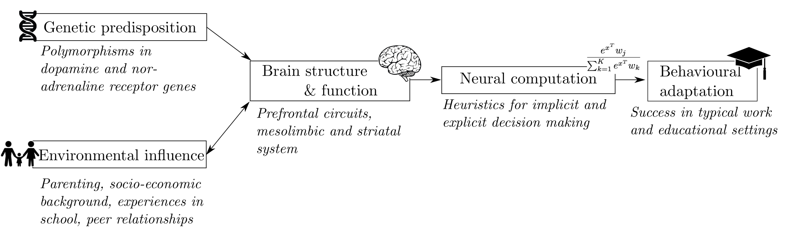

Overview
Several children in every classroom struggle with attention, regulation of activity levels, and impulse control. These difficulties are directly linked with educational under-attainment, a poor transition into the labour market, mental health difficulties, and high rates of delinquency and substance abuse. In addition to these consequences for the individual child, this can have a profound effect on the wider community, especially on parents’ mental health. The mechanisms that give rise to this complex set of symptoms are poorly understood, and thus treatment options are currently limited.
In many cases these behavioural and cognitive symptoms will result in a clinical diagnosis, the most common of which is attention deficit hyperactivity disorder (ADHD) (DSM-IV or “hyperkinetic disorder” ICD-10 F90). ADHD is a developmental disorder affecting 2-8% of young people1 that persists into adulthood in around half of the cases. Research has hitherto focussed on understanding the potential genetic and neurobiological mechanisms of ADHD. By contrast, research has yet to consider the role that context and the environment may play in understanding these symptoms. Crucially, these behaviours may be adaptive in some environments, but these are different from the educational and occupational settings in which those with ADHD struggle. The current approach of focussing solely on deficits observed in restricted settings like laboratories or schools means that we cannot explore this, and a new experimental approach is needed.

The real world is complex and dynamic, and a promising approach is to focus on an intermediate level of computations that enable us to behave optimally across multiple and changing contexts (see Figure 1). ADHD has been linked to differences in a fundamental computation that requires weighing the value of an unknown option against options that are better known. This dynamic weighing process is sometimes referred to as the ‘explore versus exploit’ computation, e.g. browsing through the channels versus watching one’s favourite show, inviting a new classmate or an old friend for a night out etc. The computations required for this trade-off have been linked to the dopamine system, which is thought to be central in the aetiology of ADHD. Further, the relative emphasis of exploration vs exploitation shifts rapidly between mid-childhood and early adolescence, which coincides with a peak in ADHD diagnosis. In this Action, I will for the first time investigate the relationship between explore/exploit decision, ADHD symptoms, and structure and function of the dopamine system across development and explore how these relationships may be shaped by genetic predisposition and the early environment (see Figure 1). Understanding how these levels of analysis interact could enable us to better support those who experience these symptoms, including adjustments at school and in the workplace through behavioural interventions, awareness training, and policy to match the predispositions of individuals with ADHD.